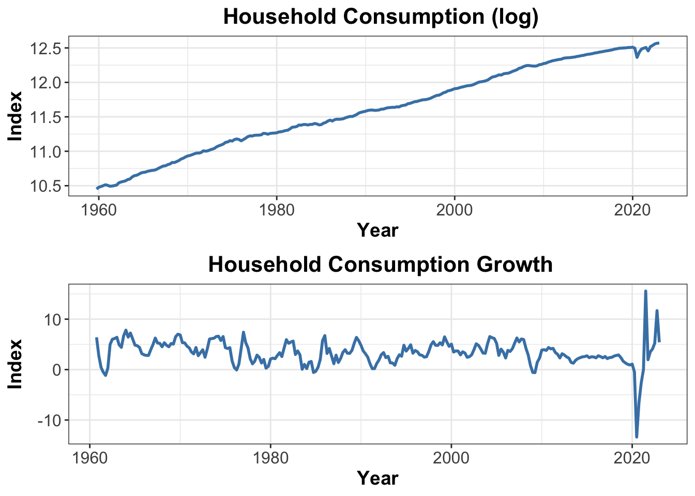
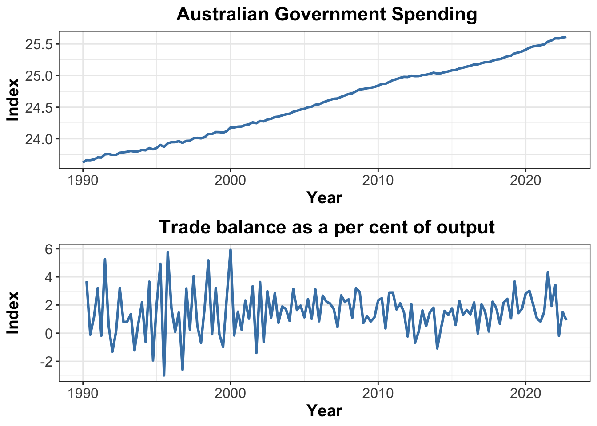
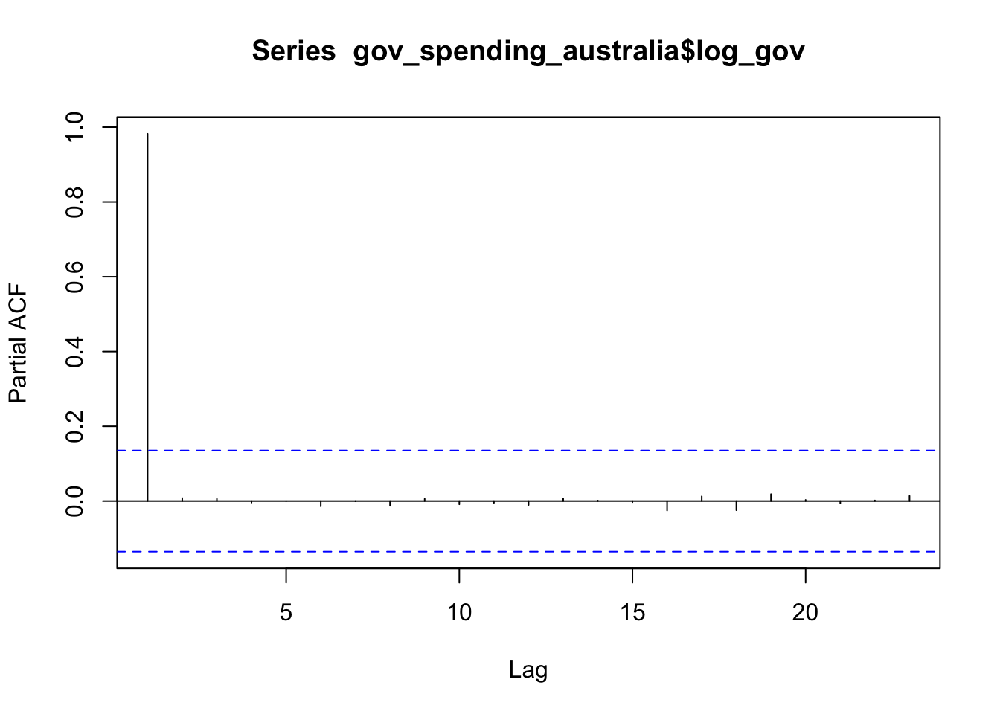

library(readrba)
library(tseries)
library(ggplot2)
library(cowplot)
library(dplyr)
library(zoo)
library(tidyverse)
library(fredr)
library(urca)Research Proposal
Abstract. This research project investigates the effects of unanticipated government spending shocks on output, real exchange rate, and consumption, particularly in the context of the Australian economy. Utilizing quarterly data and the SVAR model, the study captures the dynamic relationships among the endogenous variables. The model estimates impulse response functions (IRFs) and forecast error variance decomposition (FEVDs) for each endogenous variable, allowing for the examination of the dynamic responses of variables and quantification of forecast error variances attributable to the shocks.
Keywords. Government spending shock, exchange rate,impulse responses
Please note that the website https://www.rba.gov.au/statistics/tables/ may sometimes be unstable and unable to load. Therefore, you may encounter errors such as “Could not read HTML at https://www.rba.gov.au/statistics/tables/” when using read_rba() in R.
1. The question objective, and motivation
Objective
The research project aims to model the effect of government spending shocks on output, real exchange rate and consumption
Research question
How does the unanticipated government spending shock influence output, real exchange rate and consumption in the short run and in the long run?
Motivation
Most economies have experienced significant shocks due to Covid Pandemic,resulting in a marked increase in government net debt-to-GDP ratios. For instance,Australian’s general government net debt-to-GDP ratio surged from 24.5% in 2019 to 38.1 in 2021% by (Statistics 2021), while the United States’s ratio rose from 106.1% to 121.1% by (U.S. Office of Management and Budget and Federal Reserve Bank of St. Louis 2023.).
There has been considerable research on the consequences of government spending shocks on output, consumption, and other crucial macroeconomic factors. Economic theory suggests that positive shocks result in increased output and consumption. However, there has been less emphasis on the economy’s external sector, including real exchange rates, imports, and exports. By employing the SVARs model to identify government spending shocks and investigating their connection with these variables, policymakers can enhance the formulation and execution of fiscal and monetary policies in response to unanticipated government spending shocks.
2. Data and their properties
Data
For this study, quarterly data will be utilized for estimation purposes, as it is more reasonable to assume that government spending can respond within a given period. The primary focus of this research will be on the Australian economy, allowing for an in-depth analysis of its reaction to government spending shocks. It is important to note that the findings may not necessarily be applicable to other countries due to their distinct institutional features and economic attributes. Future research could extend the model to other nations in order to gain a broader understanding of cross-country variations in response to government spending shocks.
Initially, I will load the packages that enable direct data downloads from the Reserve Bank of Australia (Australia 2023) and the Federal Reserve Bank of St. Louis (St. Louis Accessed: 5 April 2023).
Variables
Consumption
The dataset contains information on household final consumption expenditure, which is measured in millions of dollars and recorded quarterly, with adjustments for seasonal variations. The plot, however, reveals that the data is non-stationary, with the mean value changing over time. This is a common characteristic of macroeconomic variables. As a result, I also look at the consumption growth data instead, which measures the year-ended household consumption growth and displays a decline in 2020 due to the COVID-19 pandemic. The mean value of consumption growth is 3.41%, indicating that the growth rate fluctuates around this value and is stationary over time.
In the model, the original consumption variable is log-transformed to reduce the scale and conform to the assumption of normality.

GDP
The real GDP is measured in million dollars, and the plot of this data suggests that it is non-stationary due to its increasing trend. To address this, I transformed the original variable using the lag() function in R, resulting in the GDP percentage change.
When examining the plot of the GDP percentage change, it appears to be more stationary over time. However, the data fluctuates significantly during the COVID period. In a later section, I also run ACF and PACF tests, which suggest that I should keep the original variable.

Exchange rate
The real exchange rate data is sourced from the Reserve Bank of Australia (RBA) and is provided on a quarterly basis. RBA uses the Australian dollar trade-weighted index as a measure of the real exchange rate. This index represents the price of the Australian dollar in terms of a group of foreign currencies, based on their share of trade with Australia.

Additionally, I also investigate the nominal exchange rate variable. I download the AUD/USD exchange rate, as the US dollar is widely accepted as an international currency. (Note: The data obtained using the package may not exactly match the description on the website.) However, since the nominal exchange rate may be influenced by various factors and due to data availability constraints, this research will focus exclusively on the real interest rate (TWI).
Trade balance
The trade balance data is measured as a percentage of output and is recorded on a quarterly basis with seasonal adjustments. Upon examining the plot of this data, it appears to have been stationary before the COVID period. However, since then, the trade balance has been increasing. I will also include this variable in my model as a control variable.

government spending data
Due to package constraints, readrba or readabs are not applicable for government spending data, as the data published about the public sector by ABS is yearly. Instead, I use FRED as my data source. Government spending is increasing due to the upward trend, so I use the lag() function to transform this data. I will keep the lof transformation of the original variable.

I also run the ADF test for this variable, and with a p-value of 0.5, we cannot reject the null hypothesis, indicating that the government spending data is expected to be non-stationary. For completeness, I also plot the ACF (autocorrelation function) and PACF (partial autocorrelation function). As shown in the ACF, there is a slow and gradual decay, suggesting that an autoregressive process might be suitable for the data. The PACF results also support using an AR model because the plot has a shorp cuf-off.
Augmented Dickey-Fuller Test
data: gov_spending_australia$log_gov
Dickey-Fuller = -2.1325, Lag order = 5, p-value = 0.5205
alternative hypothesis: stationary

preliminary Data Analysis
In this section, I will present a table of the ADF test results for the remaining variables for completeness. As stated in the previous section, I will retain the log transformation of the original variable in my research. Additionally, the PACF and ACF tests suggest using an autoregression model. ### ADF test
# A tibble: 8 × 3
Variable Test_statistic Critical_value
<chr> <dbl> <dbl>
1 consumption 4.44 -2.58
2 consumption_growth -3.14 -2.58
3 log_con 6.53 -2.58
4 GDP 6.22 -2.58
5 log_gdp 7.39 -2.58
6 GDP_percentage -6.37 -2.58
7 TWI -0.346 -2.58
8 Trade_balance -1.92 -2.58As anticipated, macroeconomic data is typically non-stationary. The only exception in this case is the real exchange rate, which is stationary.
PACF and ACF test


3. The model
Model Specification
Using same notations in lecture, the model is specified as follows: \[B_0 y_t = b_0 + B_1 y_{t-1}+ ... + B_p y_{t-p}+u_t\] Then the empirical model for this study is a structural vector autoregression of the reduced form representation
\[ \begin{bmatrix} \hat{g_t} \\ \hat{c_t} \\ \hat{y_t} \\ \hat{e}_t \end{bmatrix} = A(L) \begin{bmatrix} \hat{g}_{t-1} \\ \hat{c}_{t-1} \\ \hat{y}_{t-1} \\ \hat{e}_{t-1} \end{bmatrix} + \varepsilon_t \] Where:
\(g_t\) denotes real government spending,
\(c_t\) denotes household final consumption,
\(y_t\) denotes real GDP,
\(e_t\) denotes the real exchange rate (trade-weighted index),
\(A(L)\) is an nxn matrix polynomial in the lag operator L, representing the dynamic relationships among the endogenous variables,
\(\varepsilon_t\) is a vector of the structural shocks at time t: \(\varepsilon_t = [\varepsilon_{g_t}, \varepsilon_{c_t}, \varepsilon_{y_t}, \varepsilon_{e_t}]^T\).
Assumptions regarding the model’s error terms: \(\varepsilon_t |Y_{t-1} \sim iid(0_N, Σ)\)
Impusle response function and Forecast error variance decomposition
The research project aims to model the effect of government spending shocks on output, real exchange rate, and consumption. The SVAR model specified above captures the dynamic relationships among the endogenous variables. To answer the research questions, I will use the SVAR model to estimate the impulse response functions (IRFs) and forecast error variance decomposition (FEVDs) for each endogenous variable. With IRFs, I will be able to observe the dynamic response of each variable, while the FEVDs will quantify the portions of the forecast error variance of each variable attributable to the shocks this paper aims to identify.
Relevant economic context
I would expect the IRF for government spending to initially increase in response to the government spending shock and then decrease to the steady state. Consumption and GDP will also increase, but on a smaller scale compared to government spending. I am uncertain about the real exchange rate. Data shows that the real exchange rate will increase upon the shock and continue to rise after the shock.
References
Australia, Reserve Bank of. 2023. “Statistics Tables.” url = https://www.rba.gov.au/statistics/tables.
St. Louis, Federal Reserve Bank of. Accessed: 5 April 2023. “FRED (Federal Reserve Economic Data).” https://fred.stlouisfed.org/.
Statistics, Australian Bureau of. 2021. “Government Finance Statistics, Annual.” https://www.abs.gov.au/statistics/economy/government/government-finance-statistics-annual/2020-21.
U.S. Office of Management and Budget and Federal Reserve Bank of St. Louis. 2023. “Federal Debt: Total Public Debt as Percent of Gross Domestic Product [GFDEGDQ188S].” https://fred.stlouisfed.org/series/GFDEGDQ188S.